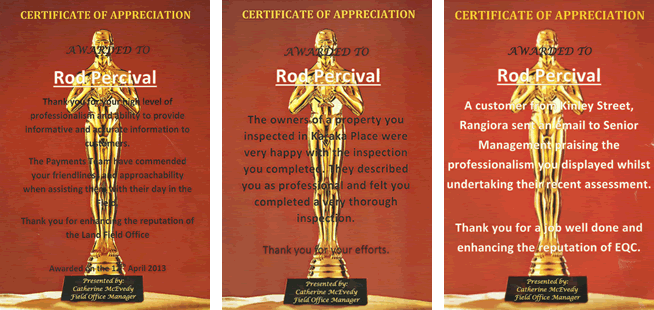

|
 |
|
|
||||||||||||
About Rod Percival
New Zealand Multi Award Winning Master Craftsman Builder
Earthquake Damage Analyst for EQC Christchurch
Building Consultant-Project Manager Hands on Construction
Career Work & Project Experience
Designed and built houses
Brief History I was the First Registered Master Builder in New Zealand to win FIVE different National Categories in the Registered Master Builders House Of The Year Competition.
My origin stems from Marton, a town in the Rangitikei region of the lower North Island, New Zealand. It was in Marton during the 1970's that I took over the running of the family company, Percival & Sons Limited after having completed my apprenticeship. Along with my younger brother Chris we worked together with our father Patrick and developed a reputation for outstanding quality and exceptional attention to detail - Qualities that are still the backbone and philosophy for me today. In addition, continual growth in Whitianga's Town Centre resulted in me applying my knowledge and expertise to several light commercial buildings and my first fully equipped waterfront restaurant, On the Rocks. I then Co-Designed and built The Fireplace Restaurant on the waterfront. The late 1990's spelt phenomenal growth for the Coromandel region and subsequently the building industry. Capitalising on the rapid development of Matarangi Beach Estate - a lifestyle resort 30 kilometres north of Whitianga, I engaged in several high profile, architectural projects including a Francis Clarke designed home for Dr Marcus and Sheree Stone of Auckland. Completed in 1998, I entered the home along with three others into the Registered Master Builders House of the Year Awards. The home launched me into the industry spotlight, taking first place in it's category as well as the coveted Supreme Award for the Auckland/Northern Region. In September of that year, this outstanding project won first place for Category 5 at the New Zealand House of the Year Awards. Rod Percival became an industry household name throughout the country, since then I have won a total of Forty Eight Awards including National Supreme Winner overall in 2002. I went on winning and was the First Builder in New Zealand to win FIVE NATIONAL CATEGORIES IN THE HOUSE OF THE YEAR AWARDS!!! 2010 brought about life changes that led me to Christchurch as a House and Land Damage Analyst/Estimator for the Earthquake Commission, I worked until December 2011 then headed to Europe to further my knowledge in Sustainability and Design for 12 months. In January 2013 once back in NZ I contracted my services to Mainland Claims Ltd in Christchurch who had a large team inspecting Earthquake Land Damage and providing estimations. After the Land Assessments were completed, I was selected to join the Multi-Unit Building Team assessing, measuring and recording damage on a Mudmap and finalising reports. I am open to Project Manage New House Builds anywhere in NZ. My partner and I are fully mobile.  For further information, please contact Rod |